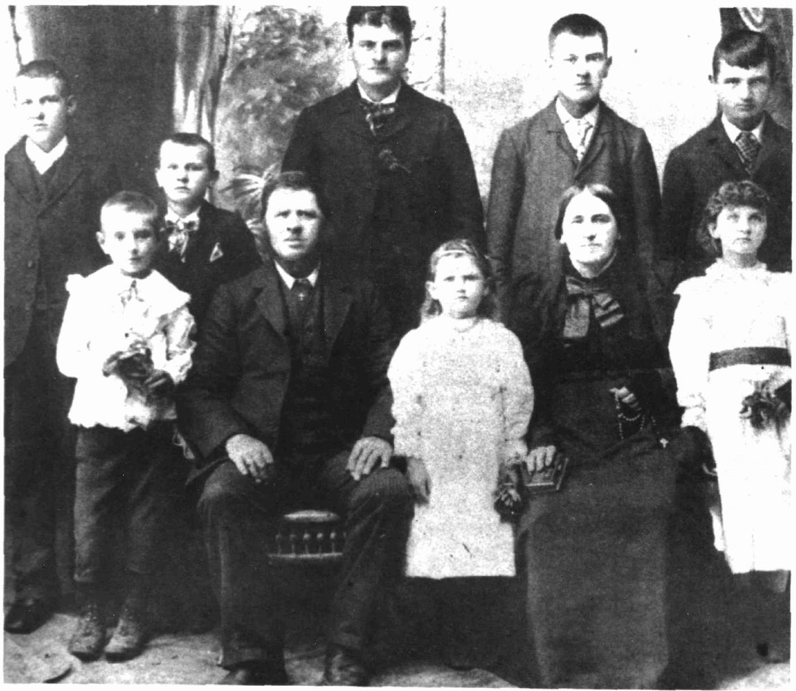

Son of Jacob Kastl · Jacob’s branch
John Joseph Kastl
1874–1950


What the book records
| Also written as | John J. Kastlp. 49As printed
|
|---|---|
| Born | 9 August 1874, Bruno, Nebraskap. 47 p. 48 |
| Lived | A farm near Yukon, Oklahoma, bought shortly after his marriage (of Yukon in 1935)p. 48 p. 44 |
| Married | Frances Marie Policky, 4 June 1902, Brainard, Nebraskap. 47 p. 48 |
| Died | 5 December 1950p. 47 p. 48 |
| Buried | Yukon, Oklahomap. 48As printed
|
Family
Parents
Jacob Kastl 1847–1935 and Alzbeta Nemecek 1849–1921
Spouse
Frances Marie Policky 1884–1976
Married 4 June 1902, Brainard, Nebraska p. 47 p. 48
Children
- James Charles Kastl b. 1903
- Rose Mary Kastl b. 1905
- Albin Joseph Kastl b. 1908
- John Francis Kastl b. 1909
- Leonard Jacob Kastl b. 1915
- Frank Julius Kastl b. 1918
- Ludmilla Frances Kastl b. 1920
All their children were born on their farm near Yukon, Oklahoma. The photo on p. 49 is captioned "John J. Kastl — Frances Policky Albin, Jim, Rose, and John".